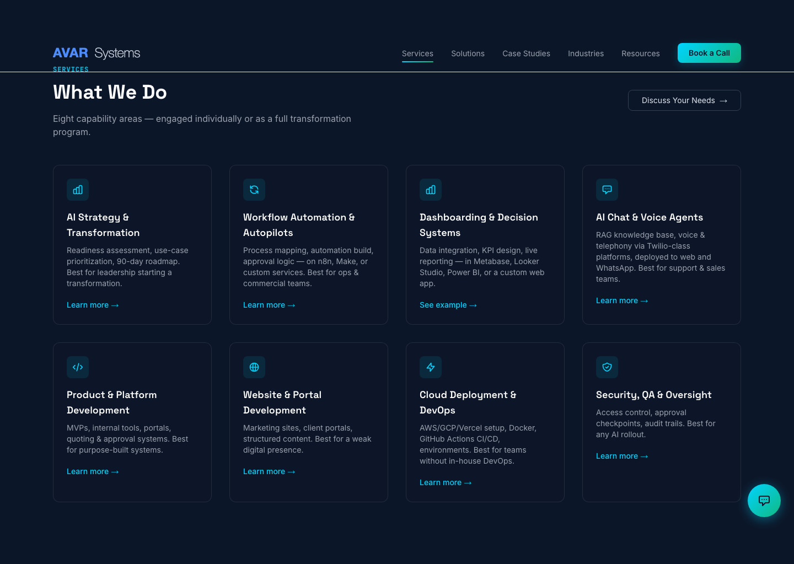
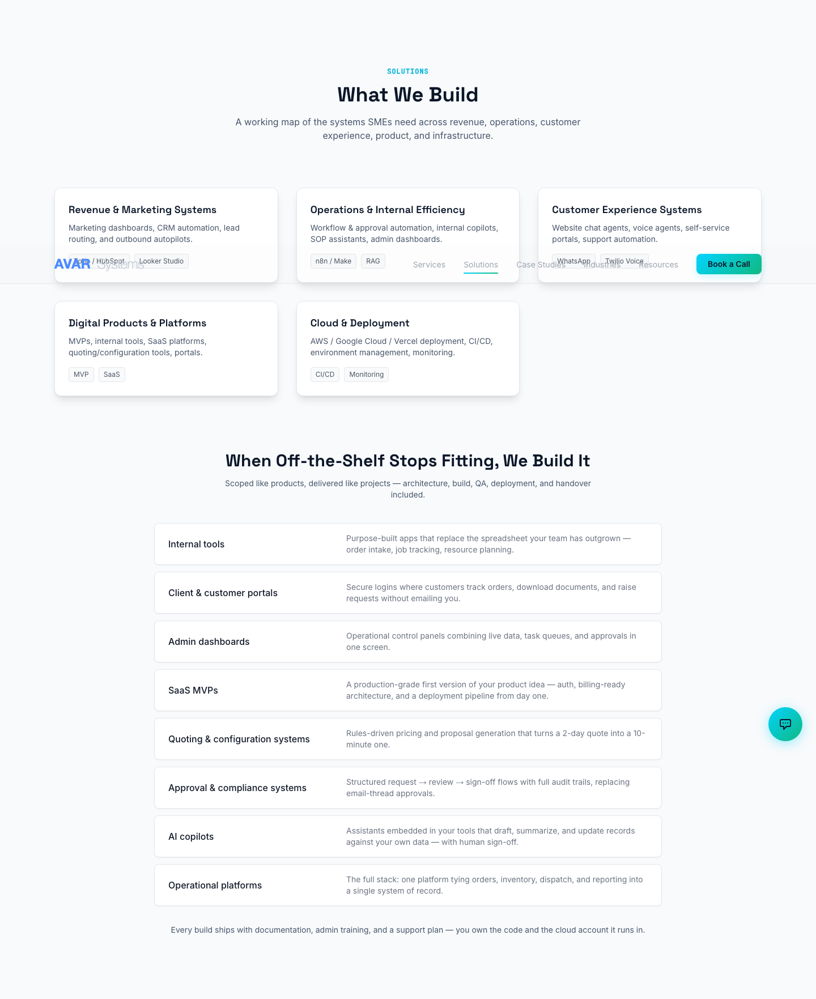
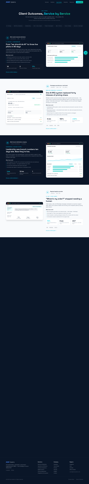

End-to-end development firm
Avar Systems
An end-to-end development firm. I am the consultant between the customer and the build: I find the customer, understand the problem, prove the answer with a POC, then deliver the project.
My role
Principal Consultant, January 2024 to present. Avar Systems designs, builds and deploys AI, automation and software for SME and mid-market businesses across logistics, eCommerce and professional services. I own the customer side of every engagement, from first conversation to handover. I have delivered production AI and automation for 5+ clients, reducing manual touchpoints 35–60% per engagement within 4-week delivery cycles.
How an engagement runs
- Find the customer: identify businesses held back by manual, disconnected operations.
- Talk to them: run discovery directly with the owners and executives who feel the problem.
- Understand the problem: map where the process breaks and what fixing it is worth, then scope the engagement and commercials.
- Create the POC: prove the solution on the customer’s own data before they commit.
- Deliver the project: architecture, build, cloud deployment, testing, documented handover and enablement, so the client’s team can run it.
How it works4 screens
-

01Homepage. -

02Services. -

03Solutions. -

04Case studies.
{kind=link}
{kind=link}
{kind=link}